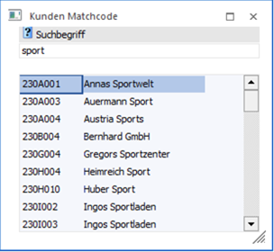

Wenn im Kassendashboard (Menüpunkt Erfassen / Belegerfassung / Kasse) oder im Zahlungsdashboard die Funktion Kundenwechsel aufgerufen wird, dann wird das Fenster "Kunden Matchcode" geöffnet.

Im Feld "Suchbegriff" kann nun wahlweise ein Teil des Kundennamen oder ein Teil der Kundennummer als Suchbegriff eingegeben werden. Durch Bestätigung des Suchbegriffs wird die Suche ausgelöst und in der Liste werden alle Treffen angezeigt. Durch einen Doppelklick auf den gewünschten Eintrag wird dieses Konto in den Beleg übernommen.
Über die rechte Maustaste, Option "Spalten anzeigen/verstecken" können zusätzliche Spalten wie
ü Straße
ü PLZ
ü Ort
ü Land
ü Name2
individuell eingeblendet und bei Bedarf auch benutzerspezifisch gespeichert werden.
Buttons
Ø Ende
Durch Drücken der ESC-Taste wird das Fenster geschlossen, es wird kein Kunde in den Beleg übernommen.
Ø Neuanlage
Durch Anklicken des Neuanlage-Buttons wird das Fenster zur Anlage von Kundenkonten geöffnet. Dort kann ein neuer Kunde angelegt und gespeichert werden. Mit dem Speichern des Kontos wird dieses auch automatisch in den Beleg übernommen (was dann im Kassendashboard entsprechend angezeigt wird).
Ø Editieren
Mit dem Editieren-Button kann das in der Tabelle markierte Konto (d.h. die Suche muss vorher ausgelöst worden sein) geändert werden. Mit dem Speichern des Kontos wird dieses auch automatisch in den Beleg (mit den geänderten Werten) übernommen.